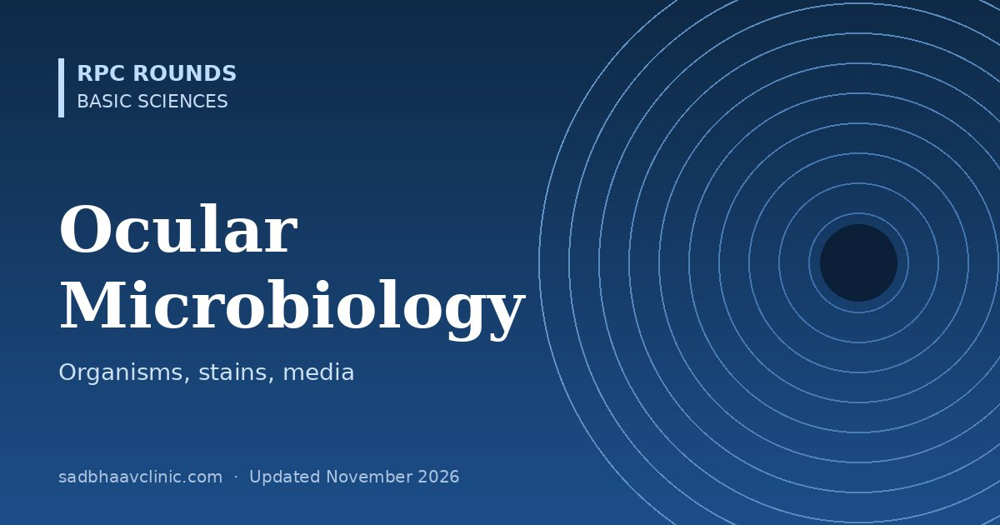

Last updated: November 2026
Infections cause some of the most sight-threatening emergencies in ophthalmology. Knowing which organism to expect, how to take the sample and which stain or medium will find it is what turns empirical treatment into targeted treatment.
The lids and conjunctiva normally carry coagulase-negative staphylococci (especially Staphylococcus epidermidis), Cutibacterium (Propionibacterium) acnes, diphtheroids and sometimes S. aureus. These organisms cause most post-operative endophthalmitis, which is why povidone-iodine before surgery is so important.
| Organism | Classic ocular disease and clues |
|---|---|
| Staphylococcus aureus | Blepharitis, styes, keratitis, endophthalmitis, orbital cellulitis; MRSA in hospital patients |
| Coagulase-negative staphylococci | The commonest cause of acute post-cataract endophthalmitis (about 70% in the EVS) |
| Streptococcus pneumoniae | Keratitis with hypopyon (ulcus serpens), conjunctivitis, bleb-related and post-injection endophthalmitis (often severe) |
| Pseudomonas aeruginosa | Contact lens keratitis: rapid, ring infiltrate, greenish discharge, melting; hospital-acquired keratitis in ventilated patients |
| Neisseria gonorrhoeae | Hyperacute purulent conjunctivitis in adults and neonates (days 1–3); penetrates intact epithelium: systemic ceftriaxone |
| Moraxella | Angular blepharoconjunctivitis; indolent keratitis in alcoholics and diabetics |
| Haemophilus influenzae | Conjunctivitis in children, preseptal cellulitis (less since vaccination), bleb-related endophthalmitis |
| Bacillus cereus | Fulminant post-traumatic endophthalmitis with a corneal ring abscess, especially with soil-contaminated injuries: vision often lost within 24–48 hours |
| Cutibacterium acnes | Chronic (delayed) post-operative endophthalmitis with a white capsular plaque; anaerobic, slow-growing |
| Nocardia | Indolent keratitis after soil trauma, wreath-like or cracked-windshield infiltrate; modified acid-fast positive; treat with amikacin |
| Non-tuberculous mycobacteria | Keratitis after LASIK and trauma, slow, "cracked windshield"; acid-fast; clarithromycin and amikacin |
| Chlamydia trachomatis | Trachoma (serotypes A–C), adult inclusion conjunctivitis and neonatal conjunctivitis (D–K, days 5–14) |
| Treponema pallidum | Uveitis of any type, interstitial keratitis (congenital), Argyll Robertson pupils |
| Mycobacterium tuberculosis | Choroiditis, serpiginous-like choroiditis, Eales disease association, phlyctenulosis |
| Bartonella henselae | Neuroretinitis (macular star) and Parinaud oculoglandular syndrome after a cat scratch |
| Klebsiella | Endogenous endophthalmitis from liver abscess, especially in East and South-East Asia and in diabetics |
Organisms that can penetrate an intact corneal epithelium: N. gonorrhoeae, N. meningitidis, Corynebacterium diphtheriae, Haemophilus aegyptius and Listeria.
| Virus | Ocular disease |
|---|---|
| Adenovirus | Epidemic keratoconjunctivitis (serotypes 8, 19, 37; very contagious, subepithelial infiltrates, pseudomembranes); pharyngoconjunctival fever (3, 7) |
| Herpes simplex (HSV-1 mostly) | Primary blepharoconjunctivitis, dendritic and geographic keratitis, stromal and endothelial keratitis, uveitis, acute retinal necrosis |
| Varicella-zoster | Herpes zoster ophthalmicus, acute retinal necrosis, progressive outer retinal necrosis |
| Cytomegalovirus | Retinitis in immunosuppression; anterior uveitis with raised IOP in the immunocompetent (Posner-Schlossman-like) |
| Epstein-Barr virus | Conjunctivitis, keratitis, lymphoma association |
| Molluscum contagiosum (poxvirus) | Umbilicated lid nodules causing chronic follicular conjunctivitis |
| Rubella | Congenital: cataract, microphthalmos, salt-and-pepper retinopathy, glaucoma |
| Measles | Keratitis (blinding with vitamin A deficiency), SSPE retinitis |
| HIV | Microvasculopathy (cotton wool spots), opportunistic infections, OSSN risk |
| Dengue, Zika, Chikungunya | Maculopathy and uveitis (dengue), congenital Zika chorioretinal scars |
| Ebola | Uveitis in survivors, virus persists in the eye |
| Group | Organisms | Clinical clues |
|---|---|---|
| Filamentous (septate) | Fusarium (the commonest in tropical India), Aspergillus | Keratitis after vegetative trauma: dry, raised infiltrate, feathery margins, satellites, endothelial plaque |
| Dematiaceous (pigmented) | Curvularia, Alternaria | Brown-black pigmented keratitis |
| Yeasts | Candida | Keratitis in compromised surfaces; endogenous endophthalmitis (string-of-pearls vitritis) in IV drug users, lines, immunosuppression |
| Mucorales (aseptate, broad, right-angled branching) | Rhizopus, Mucor | Rhino-orbital-cerebral mucormycosis in diabetic ketoacidosis and steroid use (the 2021 post-COVID wave in India): black eschar, ophthalmoplegia, vision loss; amphotericin B and surgical debridement |
| Oomycete (fungus-like) | Pythium insidiosum | Keratitis in India resembling fungal keratitis but resistant to antifungals; treated with antibacterial regimens (linezolid, azithromycin) and early therapeutic keratoplasty |
| Parasite | Ocular disease |
|---|---|
| Acanthamoeba | Keratitis in contact lens wearers: pain, radial keratoneuritis, ring infiltrate |
| Toxoplasma gondii | Retinochoroiditis next to an old scar ("headlight in the fog"), the commonest infectious posterior uveitis |
| Toxocara canis | Children: posterior pole or peripheral granuloma, chronic endophthalmitis, leukocoria |
| Taenia solium (cysticercosis) | Subretinal, vitreous or subconjunctival cyst with a scolex; important in India; surgical removal |
| Onchocerca volvulus | River blindness: keratitis, chorioretinitis; ivermectin |
| Loa loa | Worm crossing under the conjunctiva |
| Microsporidia | Keratoconjunctivitis with coarse punctate epithelial lesions after exposure to muddy water or soil (seen in India) |
| Demodex mites | Blepharitis with cylindrical dandruff at lash bases; lotilaner 0.25% drops (FDA approved 2023), tea tree oil |
| Phthirus pubis | Lice and nits on the lashes (phthiriasis palpebrarum) |
| Stain | Use |
|---|---|
| Gram | Bacteria (Gram-positive purple, negative pink), also yeasts |
| Giemsa | Cells (cytology), chlamydial inclusions, fungi, Acanthamoeba |
| KOH 10% | Fungal hyphae (fast, cheap) |
| Calcofluor white | Fungi and Acanthamoeba cysts (fluorescent) |
| Gomori methenamine silver, PAS | Fungi in tissue |
| Ziehl-Neelsen (modified 1% acid for Nocardia) | Mycobacteria, Nocardia |
| Medium | Grows |
|---|---|
| Blood agar | Most bacteria and fungi |
| Chocolate agar (CO2) | Neisseria, Haemophilus, Moraxella |
| MacConkey agar | Gram-negative bacilli |
| Sabouraud dextrose agar (without cycloheximide) | Fungi |
| Thioglycolate or brain-heart infusion broth | Anaerobes and fastidious organisms (Cutibacterium) |
| Löwenstein-Jensen | Mycobacteria |
| Non-nutrient agar with E. coli overlay | Acanthamoeba (trails) |
PCR is fast and sensitive for HSV, VZV, CMV, toxoplasma, Acanthamoeba, fungi and bacteria (16S rDNA), and for vitreoretinal lymphoma gene rearrangements. Confocal microscopy shows fungal hyphae and Acanthamoeba cysts in vivo.
| Predominant cell | Suggests |
|---|---|
| Neutrophils | Bacterial infection (and chlamydia, with mixed cells) |
| Lymphocytes | Viral infection |
| Eosinophils | Allergy (VKC, AKC) |
| Multinucleated giant cells | Herpes viruses |
| Basophilic intracytoplasmic inclusions (Halberstaedter-Prowazek) | Chlamydia |
| Keratinised epithelial cells | Dry eye, vitamin A deficiency |
| Setting | Usual organisms |
|---|---|
| Acute post-cataract endophthalmitis | Coagulase-negative staphylococci, S. aureus, streptococci |
| Chronic post-operative endophthalmitis | Cutibacterium acnes, fungi |
| Bleb-related endophthalmitis | Streptococci, H. influenzae |
| Post-traumatic endophthalmitis | Bacillus cereus, staphylococci, fungi |
| Endogenous endophthalmitis | Candida, Klebsiella, streptococci, S. aureus |
| Contact lens keratitis | Pseudomonas, Acanthamoeba, Serratia |
| Keratitis after vegetative trauma in India | Fusarium, Aspergillus, Pythium, Nocardia |
| Neonatal conjunctivitis | Chemical (day 1), gonococcal (days 1–3), chlamydial (days 5–14), herpetic (1–2 weeks) |
Where residents slip
Related: Microbial Keratitis: A Workup Approach, Endophthalmitis: Types, Organisms and Management, Acanthamoeba Keratitis: Early Diagnosis and Treatment, Revise ophthalmology checklist.
📘 Want more exam-ready material? See Most Commons in Ophthalmology on Kindle, or browse all my books.
Looking for an eye specialist in Ahmedabad? Learn about our Eye Department or book a consultation with Dr. Dhaval Patel.